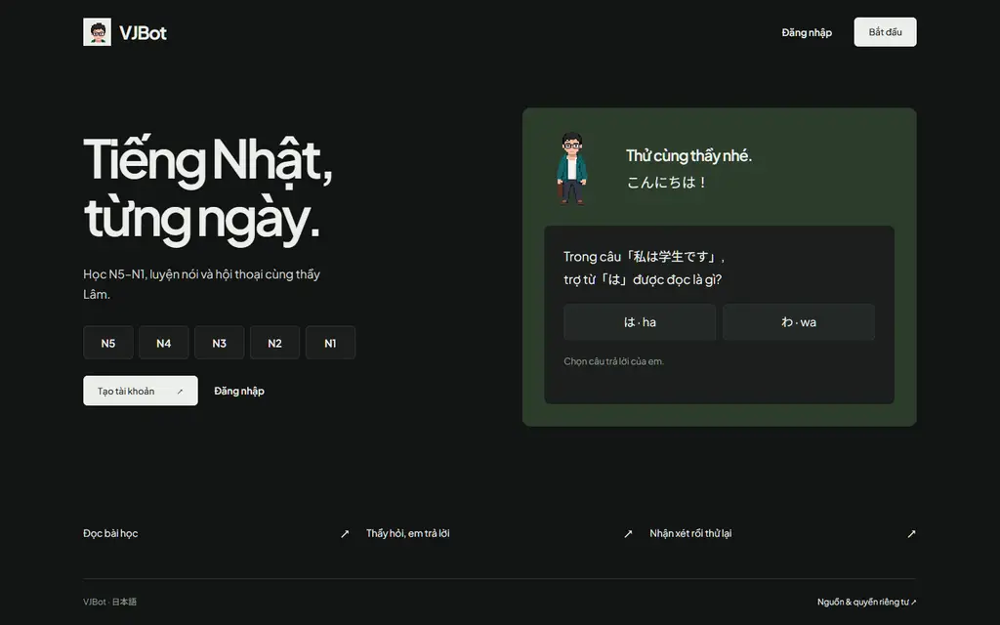

Tiếng Nhật · Tự học · Hội thoại
Nếu AI hỏi,
ai phải nghĩ?
Không chỉ đọc câu trả lời.
Tự tạo ra câu trả lời của mình.
“Thầy hỏi.
Em thử.
Mình cùng sửa.”
Reverse Chatbox trong web VJBot
Chào thầy cô và các bạn. Nếu một chatbot luôn trả lời giúp, ai đang thực sự luyện tập? Nhóm em giới thiệu VJBot, web hỗ trợ học tiếng Nhật. Hôm nay, nhóm tập trung vào Reverse Chatbox: AI đặt câu hỏi để người học tự diễn đạt.
Dừng một nhịp sau câu hỏi mở đầu. Không giới thiệu danh sách tính năng. Bấm sang slide 2.
Xác định vấn đề
Đọc thấy hiểu.
Đến lượt mình lại bí.
Lan vừa học cách nói “muốn làm gì”.
Không có mẫu trước mắt: em sẽ nói gì?
Lan là nhân vật minh họa, không phải người tham gia khảo sát.
Biết đáp án
≠
Tự diễn đạt được
Một lời giải có sẵn chưa cho thấy người học tự làm được.
Cần cơ hội thử, không chỉ thêm một lời giải.
Hãy hình dung Lan, một bạn đang học tiếng Nhật sơ cấp. Lan vừa đọc cách nói “muốn làm gì” và thấy ví dụ khá dễ hiểu. Nhưng khi cất ví dụ đi, rồi được hỏi cuối tuần muốn làm gì, Lan lại chưa tự nói được.
Lan ở đây là nhân vật minh họa, không phải kết quả khảo sát. Tình huống này giúp nhóm xác định vấn đề: đọc hiểu một lời giải chưa cho thấy mình có thể tự sử dụng kiến thức. Nếu chatbot đưa ngay câu hoàn chỉnh, Lan có thể tiếp tục đọc mà chưa cần thử. Vì vậy, nhóm muốn tạo một cuộc hội thoại buộc người học tham gia bằng câu trả lời của chính mình, nhưng vẫn có hỗ trợ khi bị bí.
Nhấn vào sự khác nhau giữa “hiểu khi đọc” và “tự sử dụng”. Không tuyên bố mọi chatbot đều chỉ đưa đáp án.
Tiêu chí & giới hạn
AI hỗ trợ suy nghĩ.
Không nghĩ thay.
Điều cần đạt
- Một câu hỏi vừa sức mỗi lượt.
- Chờ câu trả lời thật của người học.
- Gợi ý đúng chỗ đang vướng.
- Phản hồi bám câu người học viết.
Điều phải chấp nhận
AI có thể hiểu sai hoặc gợi ý quá nhiều.
Mạng, hạn mức và thời gian phản hồi có giới hạn.
Chưa có bằng chứng về hiệu quả học lâu dài.
Kiểm tra từng lượt học, không chỉ kiểm tra ô chat mở được.
Từ vấn đề đó, nhóm đặt bốn tiêu chí. Thứ nhất, mỗi lượt chỉ có một câu hỏi phù hợp. Thứ hai, AI phải chờ người học trả lời, không tự đoán bài làm. Thứ ba, khi người học bí, gợi ý cần giúp họ tiến thêm một bước thay vì giải hết. Cuối cùng, phản hồi phải dựa trên đúng câu họ vừa viết.
Nhóm cũng phải tính đến giới hạn. AI có thể hiểu sai, mạng có thể chậm và dịch vụ có hạn mức. Một cuộc chat chạy được cũng chưa chứng minh người học nhớ lâu hơn. Vì vậy, tiêu chí không phải “AI nói thật nhiều”, mà là “người học có cơ hội tự nghĩ và thử lại”. Tiếp theo, bạn thứ hai sẽ trình bày các hướng giải quyết mà nhóm cân nhắc.
Chuyển người sau câu cuối. Mốc mục tiêu: tổng 2 phút.
Các hướng giải quyết
Ba cách giúp Lan học tiếp.
Thêm lời giải
Dễ tra cứu và đọc lại.
Nhưng Lan vẫn có thể chỉ đọc.
Chat hỏi đáp
Lan hỏi, AI giải thích.
Hữu ích, nhưng Lan phải biết hỏi gì.
Chat hỏi ngược
AI gợi mở, Lan tự trả lời.
Cần kiểm soát câu hỏi và mức gợi ý.
Chọn theo hành vi muốn tạo ra: người học tự diễn đạt.
So sánh lập luận thiết kế, không phải kết quả thử nghiệm A/B.
Để giải quyết tình huống của Lan, có ba hướng. Một là bổ sung lời giải: thuận tiện tra cứu, nhưng người học vẫn có thể chỉ đọc. Hai là chat hỏi đáp: Lan hỏi, AI giải thích. Cách này hữu ích khi Lan đã biết mình chưa hiểu chỗ nào.
Hướng thứ ba là đảo vai chủ động. AI đặt một câu hỏi hoặc tình huống, rồi chờ Lan tự trả lời. Nhóm chọn phát triển hướng này vì nó trực tiếp tạo cơ hội luyện tập. Đây là so sánh về thiết kế, không phải tuyên bố nhóm đã thử nghiệm ba phương án và đo được phương án thắng.
Không phủ nhận giá trị của chat hỏi đáp. Chỉ phân biệt vai trò chủ động trong hoạt động luyện tập.
Cụ thể hóa ý tưởng
Reverse là đảo vai.
Không phải đảo văn bản.
Người học hỏi.
AI đưa lời giải.
AI hỏi.
Người học tạo câu.
Khi người học hỏi thẳng để hiểu bài, thầy vẫn giải thích; không ép mọi lượt thành bài kiểm tra.
“Reverse” ở đây không phải đảo chữ trong tin nhắn. Đó là thay đổi vai trò chủ động. Sau khi có bài học làm nền, người học bước vào chat để tự dùng kiến thức, thay vì chỉ xin thêm một đáp án.
Thầy Lâm sẽ gợi mở một tình huống vừa sức, chờ câu trả lời rồi hỗ trợ phần còn vướng. Tuy nhiên, đảo ngược không có nghĩa là thầy chỉ hỏi mãi. Nếu Lan nói “em chưa hiểu”, thầy vẫn cần giải thích ngắn gọn. Điểm nhóm muốn giữ là người học có một lượt tự thử, chứ không bị bỏ mặc hoặc bị biến mọi câu hỏi thành một bài kiểm tra.
Từ ý tưởng đến hội thoại
Cùng một mục tiêu.
Không phát sẵn câu trả lời.
Thầy hỏi
“Cuối tuần, em muốn làm gì?”
Lan thử
映画を見ます。
Em xem / sẽ xem phim.
Thầy phản hồi
Câu đúng ngữ pháp, nhưng chưa thể hiện ý “muốn”.
Lan sửa
映画を見たいです。
Em muốn xem phim.
Phân biệt “sai ngữ pháp” với “chưa đạt ý muốn nói”.
Hội thoại do nhóm soạn để minh họa nguyên lý; không phải bản ghi phản hồi AI thực tế.
Ví dụ, thầy hỏi Lan muốn làm gì cuối tuần. Lan viết “映画を見ます”, nghĩa là em xem hoặc sẽ xem phim. Câu này đúng ngữ pháp, nên không nên gắn nhãn sai toàn bộ. Điểm còn thiếu là ý “muốn” trong yêu cầu.
Thầy phản hồi đúng chỗ đó để Lan thử đổi thành “映画を見たいです”. Như vậy, Lan vẫn tự hoàn thành câu của mình. Hội thoại trên là kịch bản minh họa do nhóm soạn, chưa phải kết quả AI chạy thật. Từ ý tưởng này, bạn thứ ba sẽ giải thích cách nhóm giữ đúng mạch hội thoại khi xây dựng hệ thống.
Đọc chậm hai câu tiếng Nhật. Đây là ví dụ minh họa; không nói “AI chắc chắn luôn chấm như vậy”.
Xem xét khả năng thực hiện
Linh hoạt đến đâu?
Kiểm soát bằng cách nào?
Kịch bản cố định
Dễ giữ thứ tự câu hỏi.
Khó xử lý câu trả lời tự do.
Chỉ dặn AI “hãy hỏi”
Hội thoại linh hoạt.
Có thể quên câu đang hỏi hoặc đổi chủ đề.
AI + ngữ cảnh + trạng thái
Bám bài, giữ câu hỏi còn dang dở.
Cần kiểm tra luồng; nội dung vẫn có thể sai.
Không chỉ nhớ tin nhắn. Cần nhớ đang học đến đâu.
Khi xem xét cách làm, nhóm phải cân bằng sự linh hoạt với khả năng kiểm soát. Kịch bản cố định giữ được thứ tự, nhưng khó xử lý những câu trả lời rất khác nhau. Nếu chỉ dặn AI “hãy hỏi học sinh”, hội thoại linh hoạt hơn nhưng có thể quên câu đang hỏi.
Hướng hiện tại kết hợp AI với ngữ cảnh bài học và trạng thái phiên. Hệ thống giữ lại mục tiêu đang luyện, câu hỏi chưa giải quyết và mức gợi ý. Cách này giúp duy trì mạch học rõ hơn. Tuy vậy, kiểm soát được luồng chưa có nghĩa là mọi nhận xét tiếng Nhật đều chính xác.
Chọn cách triển khai
AI tạo lời thoại.
Ứng dụng giữ mạch học.
Vai trò của công nghệ
Web + Worker + D1 + API AI
Hiển thị · điều phối · lưu phiên · sinh phản hồi
Kiến trúc phục vụ hội thoại, không phải trọng tâm của bài trình bày.
Gợi ý phải tiếp tục câu đang vướng, không mở một bài khác.
Phương án được chọn phân chia trách nhiệm rõ ràng. AI tạo cách hỏi và cách giải thích. Ứng dụng giữ mạch học. Khi Lan chọn một bài hoặc một mục, máy chủ lấy nội dung tương ứng thay vì để AI tự đoán từ chữ trên màn hình.
Trong phiên, hệ thống giữ câu hỏi chưa được giải quyết và mức gợi ý. Vì vậy, khi Lan bấm xin gợi ý, mục tiêu vẫn là giúp câu đang vướng, không tự mở bài khác. Nếu yêu cầu AI bị lỗi, lượt đó không được lưu như một phản hồi thành công. Phần kỹ thuật dùng giao diện web, Worker, D1 và API AI; vai trò của chúng là hỗ trợ vòng luyện tập này, chứ không thay thế người học.
Đặt chat vào đúng ngữ cảnh
Bài học là điểm tựa.
Chat là nơi tự thử.

Một hành trình ngắn
Đọc bài cần học.
Luyện với Thầy Lâm.
Tự trả lời và thử lại.
Các mục thư viện, thẻ nhớ và tiến độ chỉ hỗ trợ. Không đi sâu trong bài này.
Đây là ảnh trang web công khai của VJBot. Nhóm đặt Reverse Chatbox trong một hành trình ngắn: có bài học làm nền, luyện với Thầy Lâm, rồi thử lại sau phản hồi. Người học không phải bắt đầu từ một ô chat hoàn toàn trống ngữ cảnh.
Các phần như thư viện, thẻ nhớ hay tiến độ là công cụ hỗ trợ; nhóm không đi sâu vào chúng hôm nay. Ảnh này xác nhận giao diện web đang hiện diện, không chứng minh một phiên AI trực tiếp. Tiếp theo, bạn thứ tư sẽ dẫn một lượt minh họa và nêu những điểm thiết kế cần tiếp tục kiểm tra.
Xây dựng & trình diễn bản thử
Người học giữ lượt chủ động.
Một câu hỏi.
Một lần tự thử.
Một phản hồi có mục đích.
Minh họa có kịch bản. Không gọi API, không phải bản ghi AI. Lời phản hồi thực tế có thể khác.
Phần này là minh họa có kịch bản, không phải AI đang trả lời trực tiếp. Nhóm dùng nó để giải thích rõ vòng học mà bản web hướng tới.
Đầu tiên, thầy đưa một tình huống và chờ. Lan phải tự tạo câu. Ở lượt tiếp theo, Lan viết “映画を見ます”. Thầy không kết luận sai toàn bộ, mà chỉ ra câu này chưa thể hiện ý “muốn”. Lan thử sửa thành “映画を見たいです”. Sau đó, thầy có thể chuyển sang một tình huống mới: nói điều em muốn ăn, thay vì lặp lại nguyên câu về xem phim.
Điểm cần quan sát là ai đang tạo câu trả lời. Trong cả vòng, người học vẫn phải tự làm. Với bản AI thật, nhóm cần kiểm tra câu hỏi có vừa sức không, gợi ý có tiết lộ quá nhiều không, và phản hồi có hiểu đúng câu của người học không.
Bấm “Lượt tiếp” 4 lần theo lời nói; mỗi lần dành khoảng 8–10 giây. Không mở cấu hình API. Nếu demo live chưa chuẩn bị, giữ nguyên nhãn “minh họa có kịch bản”, không giả là chat thật.
Cải tiến thiết kế
Không chỉ hỏi nhiều hơn.
Phải hỗ trợ đúng hơn.
Không ép khuôn
Đánh giá câu thật, không tự bịa lỗi hay áp một câu trả lời mẫu duy nhất.
Không mất mạch
Gợi ý giữ câu hỏi đang mở; đổi mục học thì bỏ trạng thái cũ.
Có tự dùng lại được?
Người học thử tình huống mới, không nhìn mẫu; người có chuyên môn rà phản hồi.
Chạy đúng luồng ≠ dạy đúng ≠ giúp nhớ lâu.
Ở bước cải tiến, nhóm tập trung vào chất lượng của từng lượt. Quy tắc hiện có yêu cầu thầy xem đúng câu người học viết, không tự bịa lỗi hoặc ép mọi câu trả lời vào một mẫu. Hệ thống cũng giữ câu hỏi khi xin gợi ý và bỏ ngữ cảnh cũ khi đổi mục học.
Nhưng có quy tắc chưa bảo đảm AI luôn làm đúng. Phần cần kiểm chứng tiếp là phản hồi có phù hợp về tiếng Nhật không, và người học có tự vận dụng được ở tình huống mới không. Nhóm cần cả người rà chuyên môn lẫn lần thử thực tế với người học, thay vì dùng số lượng test phần mềm để kết luận hiệu quả học tập.
Tám bước · Một mục tiêu
Bớt nhận
đáp án sẵn.
Thêm lượt
tự trả lời.
“Em có thể tự nói
điều mình muốn chưa?”
Câu hỏi dành cho Lan, cũng là thước đo nhóm muốn theo đuổi.
Reverse Chatbox đặt nỗ lực của người học ở trung tâm.
Cảm ơn thầy cô và các bạn. Nhóm xin nhận câu hỏi.
Quay lại với Lan: mục tiêu không phải là có thêm một câu trả lời hay để đọc, mà là tự nói được điều mình muốn. Qua tám bước thiết kế, Reverse Chatbox đặt nỗ lực của người học ở trung tâm. Nhóm em xin cảm ơn và nhận câu hỏi.
Dừng tại slide này khi hỏi đáp. Không chuyển sang giới thiệu các tính năng khác.